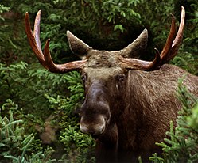

1.Millaisia lahjoja Adalmiina sai?
Vastaus: Kaksi helmeä, yksi niist oli nöyrän sydän. Se toinen helmi on olla kaunis, viisas ja rikastuminen.
2.Millainen prinsessa Adalmiinasta tuli?
Vastaus: Kaunis, älykäas, rikas, ilkeä ja ahne.
3.Milten Adalmiinalle kävi?
Vastaus: Hänestä tuli ahne.
4.Mitä kuningas lupasi prinsessan löytäjälle?
Vastaus: Prinsessan puolisoksi ja puoli valtakuntaa.
5. Miten Sigismund löysi kruunun?
Vastaus: Sigismun löysi kruunun kuin oli juomassa vettä lähteeltä.
6. Miten Adalmiina lopulta löydettiin?
Vastaus: Adalmiina löydettiin kun hän halusi että kruunu sovitettaisiin häneen.
7. Mikä on sadun opetus
Vastaus: Kauneus, älykyys ja rikastuminen ovat hyviä jos on nöyrän sydän.
Taivuta mallin mukaan Adalmiinaa kuvailevia sanoja
| perusmuoto | komporatiivi | superlatiivi |
|---|---|---|
| viisas | viisampi | viisain |
| rikas | rikkaampi | rikkain |
| älykäs | älykkäämpi | älykkäin |
| ilkeä | ilkeämpi | ilkein |
| ruma | rumempi | rumin |
| köyhä | köyhempi | köyhin |
| nöyrä | nöyrempi | nöyrin |
1. Mitä tekstin päähenkilö kertoi koulustaan?
b) Hän ei ole koskaan ollut hyvä koulussa.
2. Mikä on tekstin päähenkilön nimi?
c) Roosa
3. Misä oppiaineessa Roosa oli mielestään surkein?
d liiknnassa
4. Mihib Roosa vertasi lauluääntään?
b) variksen vaakumiseen
5. Mitä vahvuuksia Roosa käytti kertomuksessa erityisesti?
c) kärsivällisyys ja rohkeus
6. Mikä on tekstin tekstilaji?
d) realistinen (= todentuntuien) kertomus.
7. Millainen kertoja tekstissä on?
a) minäkertoja.
8. Mikä voisi olla tekstin keskeinen opetus ?
a) Jokainen on hyvä jossakin.
2. Osaatko selittää, mitkä seuraavat ilmaukset tarkoittavat?
Kissa lähti hivuttautumaan minua kohti. = Kissa lähti pikkuhiljaa minua kohti
Tuntuu kuin minulla olisi kaksi vasenta jalkaa. = Kömpelö
Jalkani lipsahtelivat rungolla = Jalkani tärisivät rungolla
Roosa aina vain sählää = Roosa aina vain pelleilee
3. Yhdistä eläin ja verbi
| eläin | verbi |
|---|---|
| hevonen | hirnua |
| kissa | maukkua |
| koira | ulvoa |
| sammakko | hypellä |
| sika | rohkiä |
| lammas | määkkiä |
4. Järjestä eläimiin liittyvät sanat lauseiksi. Muista taivuttaa sanoja!
1. istua apina oksa puu
Vastaus: Apina istuu puun oksassa.
2. hiipiä leijona puu alla hiljaa
Vastaus: Leijona hiipii puun alla hiljaa.
3. lamikko vesi juoda seepra raikas
Vastaus: Seepra juo lamikon raikasta vettä.
4. Kirahvi ouu syödä lehti
Vastaus: Kirahvi syö puun lehtiä.
5. kita auki vaania lammikko krokotiili
Vastaus: Krokotiili vaanii lammikosssa kita auki.
6. heinikko kuiva seisoa antilooppi
Vastaus: Antilooppi seisoo kuivassa heinikossa.
5. Kirjoita vahvuutesi!
Missä olet hyvä?
Koodata html'ää, käyttää githubia (Oot siellä nyt), käynnistää kone, lisätä käyttäjärjestelmä, bootata usb tikulta, mennä BIOS'iin, ättä gimppiä, käydä koulua,enkkua , luovuus, tietokonetaitoni, näyteleminen, ohjlmoida ja moni muu.
Missä sinun pitäisi kehittyä
Espanjan kielen kirjoittamisessa ja ymärtämisessä, äidinkielen kirjoittamisessa ja ymärtämisessä, matikassa päässälaskeminen ja kertotaulut
1. Vastaa kysymyksiin kokonaisillia virkkeillä
Huomaisisit että sulla on kiroitus virhe ekassa kysymyksessä ja korjasin sen
1. Miksi äiti ei aluksi anna Marialle lupaa lähteä diskoon?
Äiti ei anna Mariaa lhteä diskoon koska hän on liian nuori.
2. Miksi Marian äiti ei pidä Laurasta? Mainitse ainakin neljä asiaa.
Laura laittaa liikaa meikkiä, ei kunniota Marian äitä, puhuu liikaa ja Marian äiti luulee että Laurra on liian nuori seurustelemaan.
3. Miten kanarialintu saa äidin muuttamaan mielipiteensä?
Maria oli vapauttanut kanarialinnun ilman äidin lupaa. Sen jälkeen häkkiitu tulee takaisin, Koska häkkilintu oli elänyt elämäänsä häkissä.Äiti vaihtoi mielipiteensä koska Maria oli niinkuin häkkilintu.
4. Mihin kahteen asiaan novellin nimi viittaa?
Häkkilintuun joka on elänyt elämäänsä häkissä ja joku joka on elänyt elämäänsä kotona. (en ole varma tästä)
5. Mikä on novellin opetus tai sanoma?
.
2. Valitse sopiva adjektiivi
Mitkä alla olevista adjektiveista sopivat Marian äitiin
Mitkä alla olevista adjektiveista sopivat Luraan
Minä alleviivaan ne
avuton röyhkeä itsenäinen huonokäytoksinen kekseliäs
Millaisila adjektiiveilla sinä kuvailisit itseäsi
P A R A S, luova, kiva, työtön, rehellinen, iloinen (ainakin kun en tee läksyjä), hauska, rento, rahallinen, komea, ystävällinen ja lyhyt
3. Mikä sanoista ei kuulu joukkoon?
1. karata loitota paeta livistää
a) loitota.
2. juhlia bailata tanssia bilettää
b) tanssia .
3. reuta riehua roihuta pauhata
c) roihuta.
4. liehua lepattaa huurtua hulmuta
d) huurtua.
5. visertää pillitää piipitää sirkuttaa
e) pillittää.
6. reuna piei kauna karmi
f) kauna.
4. Taivuta suluissa olevia sanoja.
1. Marian ei halua, että Maria lähtee diskoon. (disko)5. Selitä kursiivillä olevat sanat
1. käyttää vanhoja tavaroita uusien sijaan.6. Novellissa äiti ei päästä Mariaa diskoon.Minkä ikäinen voi sinun mielestäsi mennä diskoon? Millaisissa asioissa vanhemat päätävät sinun asioistasi? Mitkä asiat sinä saat päättää itse? Kirjoita kokonaisin virkkkein
Minkä ikäinen voi sinun mielestäsi mennä diskoon?
Minun mielestäni 9 vuotiaat saa mennä koulun diskooon.
Millaisissa asioissa vanhemat päätävät sinun asioistasi?
Vanhemmat pättävät millaisia palveluita on tilattu kuten esimerkiksi netflix, puhelin liittymä ja niin edelleen.Kun menemme lomalle vanhemmat päättävät milloin se on ja missä se on.Vanhemmat myös päätävä mihin kouluun menen.Vanhemmat päättävät mitä laitan kuin menen ulos.Kuin olen sairas vanhemmat päättävät että en mene kouuun ja jos tarvii ennä lääkäriin.
Mitkä asiat sinä saat päättää itse?
Minä päätän mitä minä kirjoitan tähän sivostolle, pätän mitä katson netflixissäikäräjojen sallimis rajoissa,päätän mitä teen vapaa-ajalla jas minä voisin laittaa kaikki. .
a) Kumassa teksitssä on enemmän tetoa karhusta?
Vastaus: karhu tietoteksti
b) Kumpi teksti sijoittuu tiettyyn aikaan ja paikkaan?
Vastaus: Karhu rymiseli Haminassa uutinen
c) Kumassa tekstissä kuvaillaan yhtä tiettyä karhua?
Vastaus: Karhu rymiseli Haminassa uutinen
d) Miten tietoteksti ja uutinen eroavat toisistaan?
Vastaus: Tietoteksti antaa tietoa jostain tässä se on karhu ja uutinen kertoo mitä on tapahtunut ja tässä asiassa se on karhu rymistelee Haminassa
a) karhu elää havumetsässä hän on siellä suurin
b) karhulla on toisia nimiä esim. kontio ja otso
c) Karhulla on pääravintona toukkat ja muurahaiset
erakko : Erakko tarkoittaa että on yksinään esimerkki lause. Sinä olet erakko
yöeläin : Yö eläin tarkoittaa että eläin on yöllä liikenteellä
luonnonvarainen eläin : Luonnonvarainen eläin on eläinen joka asuu luonnossa
meksikämmen: karhu
Hirvi on aika iso ja aika hyvä tätä tehtävää varten.
Ensimmäisenä hirven ulkonäko hirvi näyttää aika hyvältä se on ruskea ja siinä on kunnon sarvet

Hirvi syöö talvella risuja ja puiden kuoreja
Ja kesällä ne syöö puita, pensaita ja ruohovartisia kasveja
Hirven lisääntyminen
Naaras synnyttää yleensä yhden tai kaksi vasaa. Myös kolmosvasoja on tavattu. Vastasyntynyt vasa painaa 11–16 kilogrammaa.
Se seuraa emoaan vuoden ajan, kunnes emo ajaa sen pois uuden vasan syntymän aikoihin.